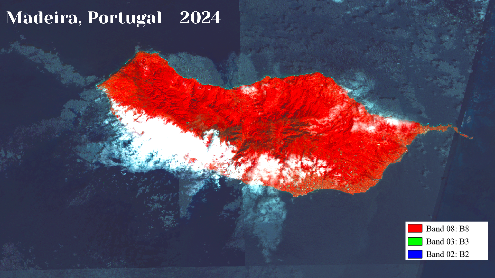
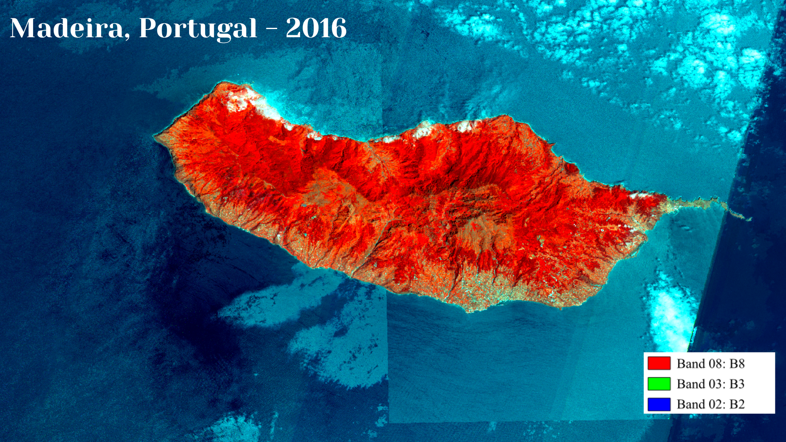
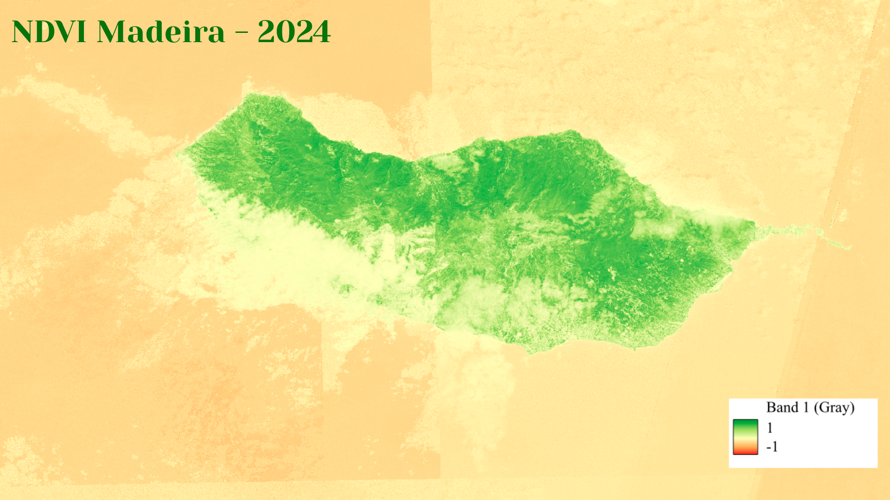
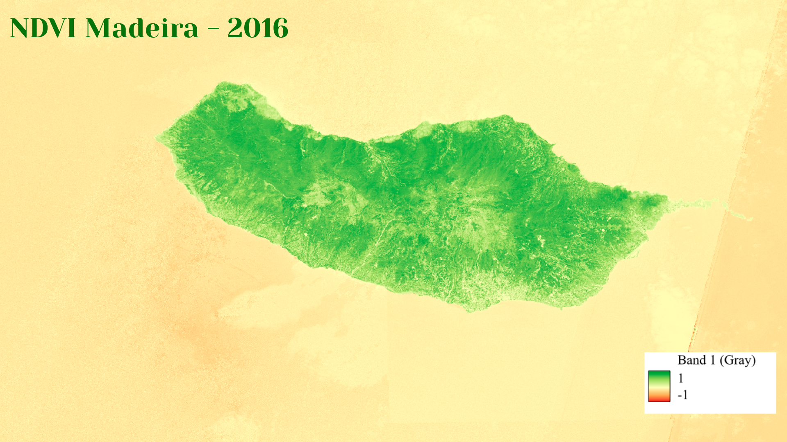
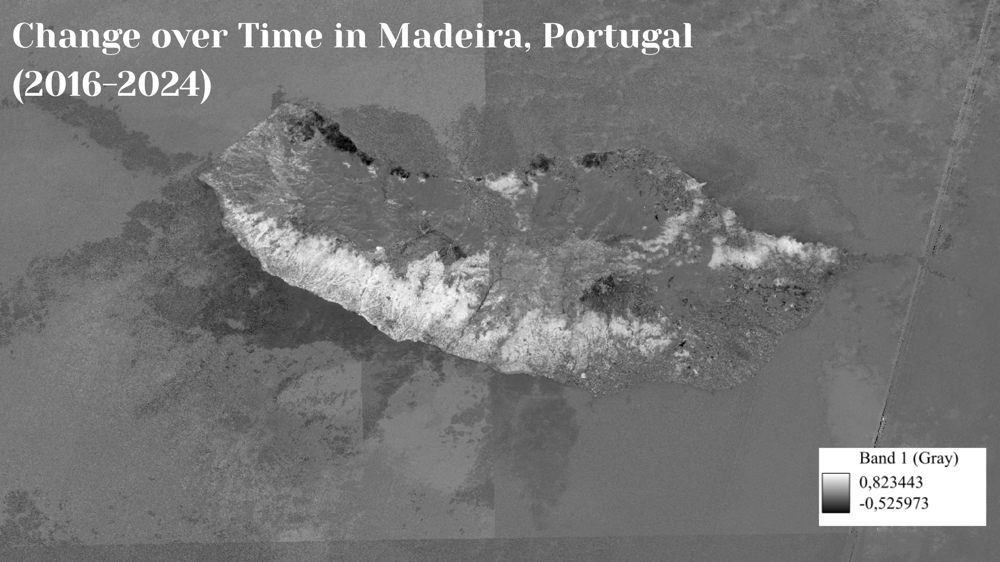

Beatriz de Araujo Possollo Soares
Vegetation Indice Map
An exploration of orthomosaic maps, multispecteral imagery, and the NDVI vegetation indice
For the fourth lab assignment, we were guided in creating a series of orthomosaic maps in order to measure vegetation changes in a specific region of interest. An orthomosaic map is a highly accurate and geometrically corrected aerial image that is composed by combining and layering various drone and aircraft photos. An important feature of orthomosaic maps they are free from distortions and perspective errors as a result of the correction of lens distortion, camera tilt, and terrain elevation. Orthomosaic maps become especially important as a Geographic Information System when they are cloudless. These cloudless orthmosaic maps are composed through the overlapping of multitudes of aerial photographs, in order to utilise the clearest pixels to produce seamless imagery. The time of year is important in orthomosaic map data gathering because different seasons are prone to increased cloud coverage or vice versa.
With the use of orthomosaic maps, cartographers are able to produce multispectral imagery that captures data from Earth in specific wavelengths of light. Unlike most aerial photography, multispectral satellites collect many layers of data, some of which go beyond what the average human is capable of seeing through the use of spectral bands (distinct ranges of wavelengths). Multispectral imagery is important because it allows researchers to detect and analyse vegetation, water, and land-use changes in much greater detail, permitting us to establish trends and recognise the impact of human settlements on natural spaces. Through utilising multispectral imagery, researchers are capable of better indicating how human activity and urban land use are impacting surrounding environments and in actualising the limits of anthropogenic expansion, hence acting as a necessary tool in sustainable development.
As just mentioned, multispectral imagery plays a key role in vegetation indices, which measure the amount of green vegetation over a given area and are used to assess vegetation health. Generally, vegetation indices are utilised to measure the “greenness” of vegetation and play an important role in studies of climate change, agriculture, and even natural disasters. There exist many different types of vegetation indices; however, one of the most commonly utilised indices is the Normalised Difference Vegetation Index (NDVI). The NDVI specifically measures vegetation health and greenness and is practically responsive in dense vegetation. Over the past 30 years, the NDVI has proven highly useful in conservational research, monitoring drought conditions, and crop assessments. The NDVI works between a range of -1 and 1, and represents the difference between near-infrared (NIR) and red reflectance divided by their sum.
Personal Exploration
For my personal exploration of orthomosaic maps, multispectral imagery and the NDVI vegetation index, I chose my region of interest as the island of Madeira, Portugal. My choice stems from my roots in Portugal and my personal connections to Madeira and its breathtaking nature. Below, I have added 5 separate maps that display varying information points. The first two maps (Figures 1 & 2) displayed are multispectral orthomosaic maps of the island itself in 2024 and 2016 (respectively). The following two maps (Figures 3 & 4) are visual representations of the NDVI calculations of vegetation greenness in Madeira in 2024 and 2016. The final map (Figure 5) displays the change over time in vegetation between 2016 and 2024.
Important note: I realised too late into my exploration that I messed up my original 2024 orthomosaic map projection of Madeira since a portion of the island is covered by clouds, which should have been avoided. In future exploration, I would place focus on ensuring I do not repeat this mistake since it disrupts the entire analysis of the following maps.
Figure 1 - Multispectral orthomosaic map of Madeira, Portugal in 2024

Figure 2 - Multispectral orthomosaic map of Madeira, Portugal in 2016

Figure 3 - Normalized Difference Vegetation Index (NDVI) Map of Madeira, Portugal in 2024

Figure 4 - Normalized Difference Vegetation Index (NDVI) Map of Madeira, Portugal in 2016

Figure 5 - Map of Change over Time in NDVI in Madeira, Portugal (2016-2024)
